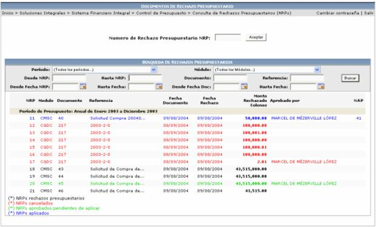

En esta consulta se presentan una serie de filtros, para que el usuario los utilice en la búsqueda de información:
Los registros se presentan en cuatro diferentes colores, esto con el fin de que el usuario pueda identificar en que estado se encuentra la información:
Los registros que aparezcan en color NEGRO son NRPs rechazos presupuestarios.
Los registros que aparezcan en color ROJO son los NRPs cancelados.
Los registros que aparezcan en color VERDE son NRPs aprobados pendientes de aplicar.
Los registros que aparezcan en color AZUL son los NRPs aplicados.

Si se quiere ver la información detallada de un NRP, solamente basta con seleccionar el registro deseado y se mostrará una pantalla como la siguiente, con información del documento original, del documento de rechazo, entre otras: